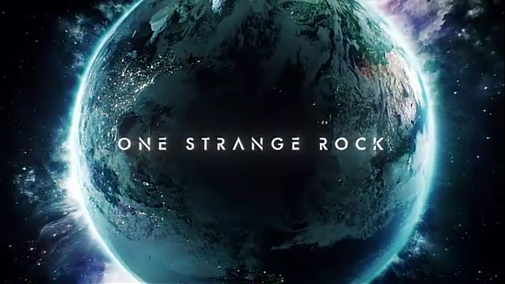
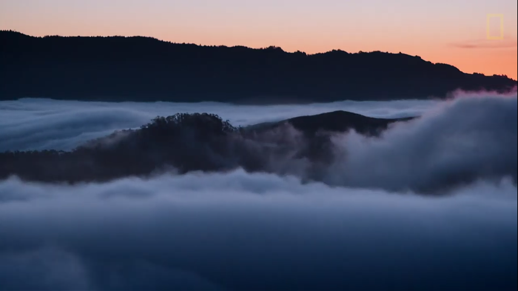
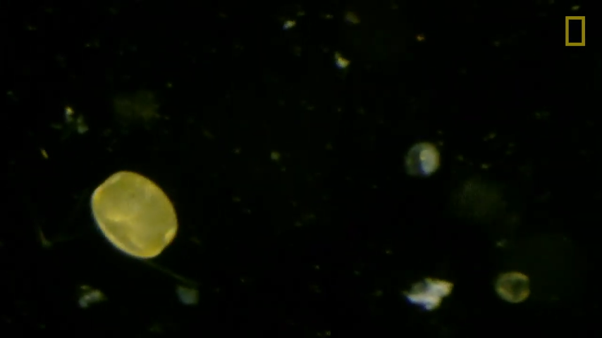

Como Miramos el Amazona
Durante mucho tiempo pensamos que las selvas tropicales son los pulmones del planeta y si asi es a como afirma Willy Smith en la serie One Strange Rock de National Geographic pero... lo usa todo, entonces como es que nos ayuda a respirar lo veremos a continuación.
Hay un río en la amazona.
NO, no ese rio que piensan, un rio en el cielo.
Si se lograra ver los arboles por dentro podrian ver como absorben el agua y toda esa agua llega hasta cierta altura y la combinación del agua con el sol la combierten en un rio caudaloso, este rio de nube va por toda sur-américa ocultando todo lo que esta debajo de el, incluso el Amazona no se puede ver desde la EstaciónEspacial hasta llegar a una gran pared solida llamada Los Andes, los golpea como un muro de ladrillos.
Golpea con un muro de aproximadamente 7000Km de Largo y 6Km de alto. Las nubes se condensan y se vuelven gotas de lluvia que contienen CO2 traido de la atmósfera es tan ácida que erosionan la roca en sedimento un camino hacia la cuenca del Amazonas. En espera de ello esta un pequeño ser vivo de mas de 3 veces mas delgado que un cabello humano, Las Diatomeas.
Diatomeas
Las diatomeas son el secreto del suministro de oxígeno en el planeta básicamente por que nadie habla de ellas, son un tipo de algas pequeñas que consumen el sedimento de rocas, hielo, etc. Las diatomeas se encuentran en gran parte en Océanos, rios, etc. Cuando respiras una vez esa vez fue suministradas por esos pequeños seres vivos.
Aunque, el oxígeno que producen no lo utilizamos nosotros lo utiliza para otras funciones en el Amazona como: La supervivencia.
Supervivencia: Plantas y Animales
El Amazonas al ser tropical lo hace automaticamente un lugar díficil para sobrevivir tanto para animales como para plantas a diferencia de otras selvas el Amazonas no se deberia incendiar por si solo ya que es tropical por lo tanto cada planta tiene que apresurarse a nacer, y eso es solo el comienzo de la batalla.
Luego se enfrentan a diferentes pruebas para ganar la díficil carrera de, conseguir la luz del Sol. Su primera prueba es los insectos y planta lo que los lleva a crear defensas como espinas para insectos y animales, sabia venenosa, apariencia amenazante. Cuando superan las pruebas básicas se enfrentan a la siguiente batalla y es contra ellas mismas con las mismas defensas atacando plantas pequeñas y bloqueando la luz, la supervivencia es complicada pero si lo logras, si evitas cada obstaculo prosperar la vida sera cosa fácil.
Supervivencia: Animales
El alimento es el principal reto de los animales y más para los pequeños por que se tienen qie enfrentar a Leopardos, Pumas, insectos mortales, etc. Pero luego el propio alimento es el enemigo las plantas tienen muchas defensas y si se llega a enfermar no le queda mucho tiempo para buscar alguna cura normalmente los animales recurren al barro pero casi siempre hay trampas en esos caminos por que hay leopardos u otro depredador esperando a atacar.
La batalla en la selva es hostil por lo tanto el amazona tiene como otra función proporcionar oxígeno los animales para desplazarse por ese gran lugar que es bastante húmedo, oscuro y extenso donde solo los que mejor se adapten a los cambios sobreviven.

El Amazona no produce el 10% de oxigeno en el planeta tierra, las selvas en total producen el 10%, el Amazona es como el 4% del 10%.
MásInformaciónEsta información ha sido obtenida por el siguiente enlace con fines educativos por parte de Learneffective. Derechos reservados
National Geographic